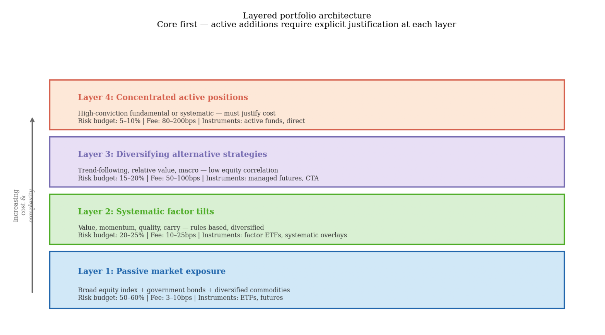
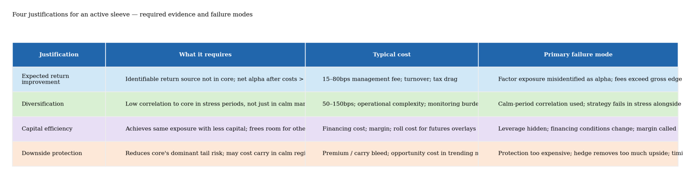

7. From core allocation to active programs
Understanding where returns come from, how to construct a portfolio around them, and what to expect from current conditions is necessary but not complete. Capital still has to be organized — allocated across exposures in a way that reflects both the analytical work that precedes this decision and the practical constraints that govern how portfolios are actually managed. That organizational question has a specific answer, and the answer has a specific order.
The answer begins with a sequencing principle that is easy to state and consistently violated in practice. Strategic allocation comes first. Active additions come after, and only when they can justify their place against a baseline that is honest about what the core already delivers.
Why asset allocation dominates most outcomes
The dominance of asset allocation over security selection is not primarily an empirical finding — it is a structural consequence of how risk works in a portfolio.
Consider a portfolio that holds 80 percent in a broad equity index and 20 percent in cash. Before any security selection, manager choice, or factor tilting begins, that portfolio has already accepted a specific sensitivity to equity risk, to economic cycles, to earnings volatility, and to the repricing of growth assets when real rates rise. Every other decision — which stocks, which managers, which factors — operates within that sensitivity, not independently of it. An active sleeve that generates 100 basis points of annual alpha net of fees in 10 percent of the portfolio contributes 10 basis points to total portfolio return. The strategic allocation decision affecting the remaining 90 percent contributes far more with every percentage point of variance it introduces.
This is why Brinson, Hood, and Beebower found that variation in asset allocation policy explained the large majority of variation in total portfolio returns across pension funds (Brinson et al. 1986). The result has been debated — Ibbotson and Kaplan later showed the interpretation depends on whether one asks how much of the level of return comes from allocation versus how much of the cross-sectional variation does (Ibbotson and Kaplan 2000) — but the practical core is durable. The choice between equity-heavy, balanced, inflation-aware, and diversifying structures tends to matter more than the fine detail of what is held within those structures, because it determines the portfolio’s exposure to the most powerful macro forces identified in sections 4 and 6: the equity risk premium, the term premium, inflation, and the discount rate regime.
If the core is poorly designed — if it carries hidden concentration in the same growth-and-duration complex that dominates most balanced portfolios, if it depends on a stock-bond correlation that is regime-conditional rather than structural, or if it is more sensitive to rising real rates than the nominal allocation suggests — active additions will not repair it. A carefully designed momentum overlay sitting on top of a core that is 85 percent equity risk in disguise is still primarily an equity portfolio, and when the equity regime turns, the overlay’s diversification value will be overwhelmed by the core’s dominant exposure.
Building the core: the four questions it must answer
A sound strategic core is not simply a broadly diversified, low-cost portfolio, though both are necessary properties. It is a portfolio that has answered four questions clearly enough to survive periods of stress without requiring structural redesign.
The first question is what the capital is for. A portfolio serving a liability has a different return requirement and risk tolerance than one managing for perpetual spending or long-term wealth accumulation. The structure appropriate for one is often inappropriate for another, and treating a diversified multi-asset portfolio as generically suitable for all purposes produces cores that serve none of them well under stress.
The second question is what drawdown the portfolio can actually tolerate in institutional practice. The practical drawdown tolerance is set not by the investor’s stated risk appetite but by the constraints that become active during a severe episode — redemption pressure, mandate review, committee intervention, and the psychological difficulty of maintaining conviction when the portfolio is substantially below its previous high. A core that has never been stress-tested against those pressures has not answered this question.
The third question is what macro relationships the core implicitly depends on. A traditional 60/40 portfolio depends on the stock-bond correlation remaining negative, on inflation remaining contained enough that duration hedges equity stress, and on the equity risk premium remaining positive. When all three assumptions held — as they did through most of 1985–2020 — the structure performed well and its dependencies were invisible. When the inflation assumption broke in 2021 and 2022, bonds and equities fell simultaneously, and the diversification that had appeared structural proved to be regime-conditional. A core that had answered this question honestly would have held some inflation-sensitive exposure — commodities, TIPS, real assets, or trend-following strategies — not as a performance bet but as insurance against exactly the regime that subsequently materialized (Ilmanen et al. 2018).
The fourth question is what level of simplicity is required for the structure to be maintained consistently. Complex allocations require more monitoring, more decision-making under pressure, and more behavioral resilience than simple ones. Simplicity has genuine option value: it reduces the surface area over which behavioral errors and institutional drift can accumulate.
The architecture diagram below illustrates how these principles translate into a layered portfolio structure. The passive market exposure layer carries the largest risk budget at the lowest cost and answers the strategic allocation question. Each subsequent layer requires a more demanding justification, introduces more operational complexity, and commands a higher fee. The diagram is not prescriptive — the right number of layers and the appropriate risk budget at each will differ across investors — but it makes the hierarchy visible.
The cost of complexity and the hurdle it creates
Before any active program is added, its prospective contribution needs to be compared against a baseline that is honest about what passive exposure actually delivers and what active alternatives actually cost.
The passive baseline is more demanding than is usually acknowledged. A globally diversified equity index has delivered long-run real returns of approximately 5 to 6 percent annually after inflation. A broad investment-grade bond index has delivered approximately 1 to 2 percent in real terms in normal-rate environments, and substantially more when starting yields are elevated. A simple 60/40 combination has historically produced Sharpe ratios of approximately 0.4 to 0.5 over long samples, with maximum drawdowns of 30 to 40 percent in severe episodes. This is available at 3 to 10 basis points of annual fee in the current ETF market (Vanguard, n.d.).
The all-in cost of active alternatives is substantially higher than the management fee alone. Bogle’s work on the arithmetic of investment costs identified four cost layers that apply to most active portfolios: the management fee, transaction costs from higher turnover, the tax drag from realizing gains more frequently, and what he called the “cost of complexity” — the advisory, due diligence, and monitoring burden that accompanies active mandates (Bogle 2018). When all four are included, the effective annual cost of a typical active equity mandate is not 80 basis points but often 150 basis points or more. For a hedge fund structure with a 1.5 percent management fee and a 20 percent performance allocation, the effective all-in cost can reach 300 to 400 basis points in good years, with the asymmetry of the performance fee working systematically against the investor.
This cost structure sets a specific hurdle. The chart below shows what fee drag compounding means over 20 years, assuming 7 percent gross annual return across all strategies. An active equity fund at 80 basis points leaves the investor with approximately 15 percent less wealth after 20 years than a passive fund at 5 basis points. A hedge fund at 150 basis points leaves approximately 25 percent less. These are not marginal differences — they are the dominant driver of long-run return outcomes once compound interest is applied to the fee gap. The gross alpha required to break even against the passive baseline is therefore not 80 basis points — it is 75 basis points of persistent annual outperformance above the benchmark just to match net returns, before any adjustment for the additional risk the active portfolio may be taking.

Most active managers do not clear this hurdle over long horizons. The SPIVA U.S. Year-End 2023 scorecard found that approximately 88 percent of large-cap active equity funds underperformed the S&P 500 net of fees over fifteen years (S&P Dow Jones Indices 2023). The fee drag arithmetic is a structural reason why this should be expected: the average active dollar earns the market return before costs and must underperform after them (Sharpe 1991). Outperformance is possible for individual managers, but the distribution of net outcomes is centered below the passive baseline, not above it.
When an active layer earns its place
None of this argues against active management categorically. It argues for a stricter standard of justification before active risk is added. An active layer earns its place through one of four mechanisms, and the investor should be able to identify which one applies before allocating capital.
The first is a genuine improvement in expected return — not relative to recent history, but relative to the forward-looking estimate from section 6. A factor-tilted equity strategy at 15 basis points that introduces genuine value or quality exposure not captured in the cap-weighted index may meet this standard for many investors. A discretionary equity long-short fund at 150 basis points plus 20 percent of performance, based on a three-year track record, does not meet it without considerably more evidence.
The second is diversification — introducing a return source whose drivers differ enough from the core that the combination produces a better distribution of outcomes. A trend-following program has historically shown negative to low correlation with equity drawdowns and has performed best in prolonged dislocations — precisely the periods when a growth-and-duration core performs worst (Ooi et al., n.d.). Its standalone expected return is moderate. Its contribution to a core-plus portfolio, evaluated through the portfolio construction lens of section 5, can be meaningfully positive even when its standalone Sharpe is unimpressive.
The third is capital efficiency — expressing a view through instruments that use less balance-sheet capital, freeing the remainder for other exposures. Futures overlays, derivatives-based tail protection, and currency hedges all belong to this category when properly structured.
The fourth is downside protection — reducing the portfolio’s exposure to a specific risk the core carries too heavily. These additions will often cost carry in calm regimes and pay substantially in stress. The justification is asymmetric: they are not there to improve average return but to improve survivability in the scenarios that are most damaging.
The table below summarizes these four justifications alongside the evidence required for each, the typical cost structure, and the specific failure mode that most commonly undermines each rationale in practice. The failure mode column is as important as the justification column — each rationale has a characteristic way of disappointing, and understanding those failure modes in advance is what makes the evaluation honest rather than optimistic.

The failure modes of core-plus-active structures
Even when the sequencing is correct — core first, active additions after — specific failure modes recur often enough to deserve explicit identification.
The first is sleeve proliferation. A portfolio that begins with a sound core and adds one carefully justified active program can gradually accumulate additional sleeves over time. Each addition may have been individually justified at the time of approval, but the aggregate structure becomes difficult to monitor, expensive in aggregate fee, and deeply correlated in ways not visible when each sleeve was evaluated separately. The portfolio ends up looking diversified by label and concentrated by exposure.
The second is benchmark mismatch. Active programs evaluated against a benchmark that does not reflect their actual return source will be either incorrectly retained or incorrectly terminated. A trend-following strategy evaluated against a fixed-income benchmark will look poor in trending equity markets even when it is performing its intended function. The solution is to set the evaluation benchmark before the strategy is allocated capital, not after it has already underperformed.
The third is regime misjudgment at the core level. An investor who built a passive equity-bond core through 2019 and added a carry strategy as a diversifier discovered in 2020 that the carry strategy performed poorly in exactly the global risk-off episode that also damaged the core. The carry strategy was not misdesigned — it was doing what carry strategies do in that environment. The problem was that the core was not diversified against the regime in which both the core and the sleeve failed simultaneously. No amount of careful active sleeve management repairs a structural failure at the core level. This is why the four questions a core must answer — especially the question about which macro relationships it depends on — matter more than any subsequent active addition.
The fourth and most common failure mode is behavioral. The chart below shows value factor performance alongside the broader market from 2013 to 2022. Value underperformed growth severely from 2017 through early 2021 — a period of approximately four years during which the factor strategy was analytically intact but experientially very difficult to hold. Many institutional allocators reduced or eliminated their value factor exposure near the trough, precisely when the subsequent partial recovery would have rewarded patience. The factor did not fail. The institution’s ability to maintain conviction through an extended period of benchmark-relative underperformance failed.

Retaining a strategy through that kind of performance requires understanding in advance what the expected underperformance profile looks like, setting that expectation explicitly before the allocation begins, and maintaining institutional memory of why the strategy was added when its most recent performance makes it hardest to defend.
The framework and the strategy it supports
The seven sections of this framework have built a specific set of conceptual tools: an understanding of how prices embed expectations, how speculative dynamics can overwhelm fundamental anchors, why signals decay and active outperformance is rare, where returns come from and how to decompose them, how portfolios should be constructed around those return sources, how to estimate forward returns conditionally rather than from historical averages, and how to design a core allocation and justify active additions against a rigorous baseline.
These tools are not abstract. They map directly onto the systematic multi-asset strategy that this framework supports. The return source taxonomy from section 4 explains what the strategy is harvesting — equity risk premium, duration, real asset carry, and signal-based tactical allocation across the same futures instruments. The portfolio construction principles from section 5 explain how those exposures are sized, combined, and rebalanced. The expected return framework from section 6 explains how to evaluate whether the current pricing of those exposures justifies the positions. And the hierarchy from this section explains where the strategy sits in a broader portfolio — as a carefully justified active program around a sound core, not as a substitute for having one.
The strategy should be evaluated against the standards this framework establishes: its return sources should be identifiable and not merely a repackaging of existing exposures; its portfolio contribution should be demonstrable beyond standalone Sharpe; its implementation should be honest about costs, capacity, and signal decay; and it should have been stress-tested against the regimes where its underlying logic is most likely to fail. That is the standard. The strategy documentation that follows this framework applies it.
References
Bogle, John C. 2018. “The Arithmetic of ‘All-in’ Investment Expenses.” Financial Analysts Journal 74 (1): 14–21. https://www.cfainstitute.org/en/research/financial-analysts-journal/2018/the-arithmetic-of-all-in-investment-expenses.
Brinson, Gary P., L. Randolph Hood, and Gilbert L. Beebower. 1986. “Determinants of Portfolio Performance.” Financial Analysts Journal 42 (4): 39–44.
Ibbotson, Roger G., and Paul D. Kaplan. 2000. “Does Asset Allocation Policy Explain 40, 90, or 100 Percent of Performance?” Financial Analysts Journal 56 (1): 26–33.
Ilmanen, Antti, Ronen Israel, Tobias J. Moskowitz, Ashwin Thapar, and Oscar van den Heuvel. 2018. Diversification During a Century of Drawdowns. AQR Alternative Thinking. https://www.aqr.com/-/media/AQR/Documents/Alternative-Thinking/AQR-Alternative-Thinking-3Q18---Diversification-During-a-Century-of-Drawdowns.pdf.
Ooi, Yao Hua, Matthew Hutchison, and Lasse H. Pedersen. n.d. Trend-Following and Crisis Alpha. AQR White Paper. https://www.aqr.com/-/media/AQR/Documents/Insights/White-Papers/Trend-Following-and-Crisis-Alpha.pdf.
Sharpe, William F. 1991. “The Arithmetic of Active Management.” Financial Analysts Journal 47 (1): 7–9. https://web.stanford.edu/~wfsharpe/art/active/active.htm.
S&P Dow Jones Indices. 2023. SPIVA U.S. Year-End 2023 Scorecard. https://www.spglobal.com/spdji/en/spiva/article/spiva-us/.
Vanguard. n.d. The Case for Low-Cost Index-Fund Investing. https://corporate.vanguard.com/content/corporatesite/us/en/corp/articles/the-case-for-low-cost-index-fund-investing.html.